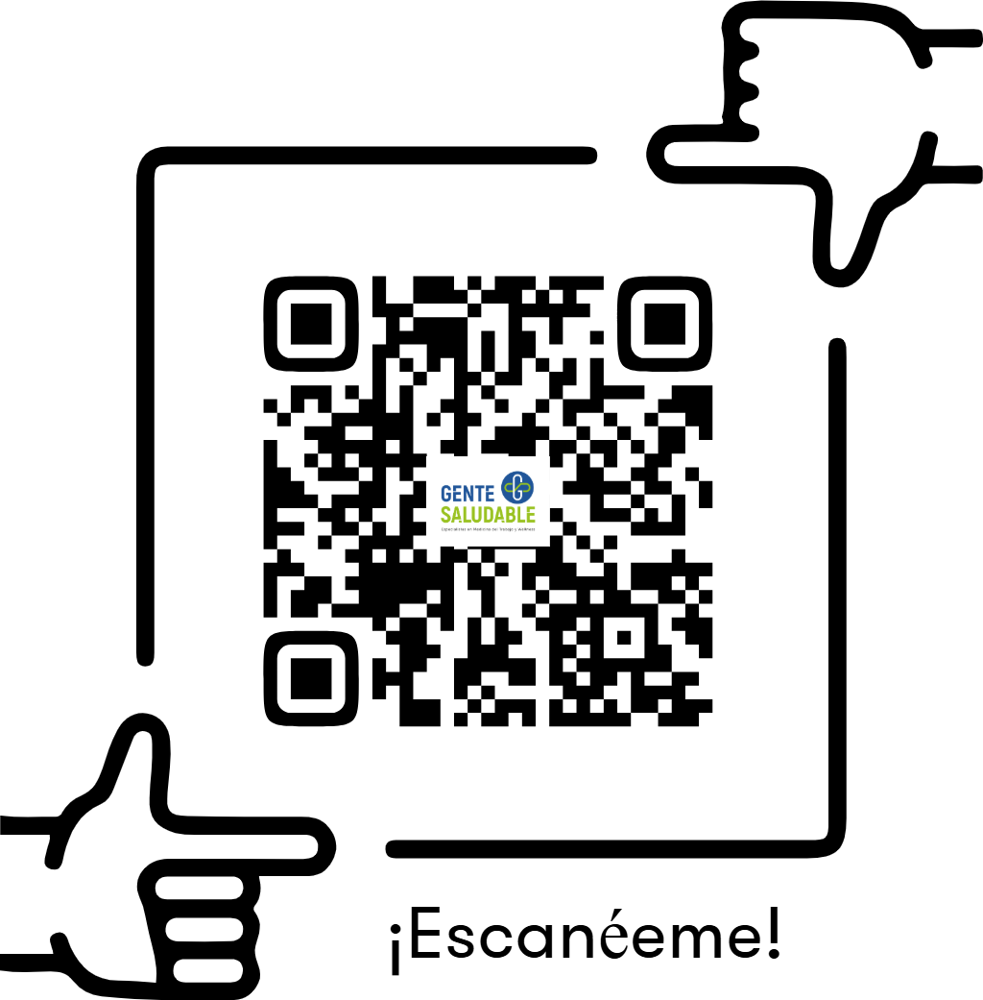

El costo invisible de navegar
Cómo la SALUD MENTAL de la tripulación impacta directamente en la seguridad, productividad y rentabilidad neta de la flota en la Hidrovía.
Top 10 de Pérdidas Ocultas
Factor Humano y Salud Mental en Navieras — Haz clic en cada cuadrante para revelar el impacto
El Contexto de la Hidrovía
Las condiciones de aislamiento y las guardias 6/6 potencian los síntomas clínicos en la tripulación.
- Fatiga crónica y agotamiento ¹⁶
- Alteraciones severas del sueño ¹¹
- Dolores musculoesqueléticos ¹⁰
- Hipertensión y somatización ¹⁷
- Ansiedad y tensión permanente ¹⁴
- Episodios depresivos o apatía ¹³
- Irritabilidad e hipersensibilidad ¹⁷
- Sensación de encierro/atrapamiento ¹⁴
- Negligencia procedural (piloto automático) ¹²
- Consumo de sustancias — automedicación ¹⁵
- Conductas de riesgo imprudentes ¹⁷
- Falta de apetito o atracones compulsivos ¹⁵
- Conflictos directos con la tripulación ¹³
- Aislamiento social a bordo ¹⁵
- Debilitamiento de vínculos familiares ¹⁷
- Insubordinación o fricción con mandos ¹³
Mapeo Clínico Interactivo — Red de Impacto Financiero
Seleccioná un diagnóstico para ver sus síntomas y la carga financiera asociada en las operaciones.
← Seleccioná un diagnóstico para ver los síntomas en los 4 cuadrantes
¿Qué pasa si la empresa decide "esperar y ver"?
Hacé clic en la primera ficha o en Iniciar para ver el efecto dominó en cascada.
Propuesta de Valor: Programa "Gente Saludable" para la Industria Naviera
Transformando el Riesgo Psicosocial en Rentabilidad Operativa — Un programa integral de 4 pilares.
Intervención especializada en Trastornos de Ansiedad, Depresión y desgaste familiar (síndrome de la "Familia Acordeón"). Abordar la renuncia pasiva permite que el tripulante recupere su capacidad de afrontamiento frente a las exigencias del entorno fluvial.
Capacitación en los principios "Ver, Escuchar y Vincular" ante situaciones críticas como accidentes a bordo o malas noticias en tierra. ¹⁹ Los PAP reducen el desarrollo del Estrés Post-Traumático.
Canal de contención inmediata para crisis. La intervención en tiempo real reduce reacciones impulsivas que podrían terminar en daños a la carga, la maquinaria, los demás o a sí mismo.
Herramientas psicoeducativas para gestión del estrés, higiene del sueño y hábitos saludables. Mejorar la higiene del sueño previene la negligencia procedural en maniobras críticas de la Hidrovía.
Cuadro Comparativo: Utilidad de los Primeros Auxilios Psicológicos (PAP)
Referencia: Everly & Lating (2022). The Johns Hopkins Guide to Psychological First Aid. ¹⁹
| Indicador de Respuesta | ✗ Sin PAP | ✓ Con PAP |
|---|---|---|
| Detección y contención inicial | Improvisación que puede empeorar la situación y aumentar la angustia. | Presencia compasiva inmediata para estabilizar reacciones mediante escucha reflexiva. |
| Evaluación de urgencia (Triaje) | Riesgo de desperdiciar recursos sin distinguir estrés temporal de disfunción severa. | Triaje psicológico estructurado para priorizar por inestabilidad conductual o cognitiva. |
| Mitigación del estrés agudo | Las personas pueden empeorar su estado, desarrollando reacciones impulsivas. | Orientación anticipatoria, reencuadre cognitivo y manejo del estrés para infundir esperanza. |
| Resolución y seguimiento | El incidente concluye sin directriz clara ni orientación sobre recursos de apoyo. | Acceso a atención continua; determina autonomía del individuo o derivación a nivel superior. |
Los PAP ayudan a recuperarse de la adversidad estabilizando reacciones agudas y fomentando la resiliencia natural. El tratamiento de primera línea promueve menores tasas de síntomas invalidantes y mejor funcionamiento social. ¹⁹
Los PAP funcionan como un "multiplicador de fuerza" que amplía la capacidad de respuesta psicológica. Al capacitar una Brigada de Emergencia Interna, la empresa mejora su resiliencia organizacional ante incidentes críticos. ¹⁹
El Compromiso Ético y Corporativo
La contratación de cualquiera de nuestros servicios incluye, sin costo adicional, una Charla de Socialización On-Board o en Base.
Objetivo EstratégicoPresentar el programa frente a la tripulación para derribar el estigma cultural, explicar que garantizamos estricto secreto profesional clínico. Con el fin de potenciar el uso del servicio clínico de manera preventiva y no solamente reparatoria. Aplica tanto para los malestares fisiológicos como psicológicos.

Haga una cita para agendar una reunión y evaluar la implementación de un programa a medida en su flota.
Referencias Bibliográficas
Formato APA — Fuentes citadas en esta presentación